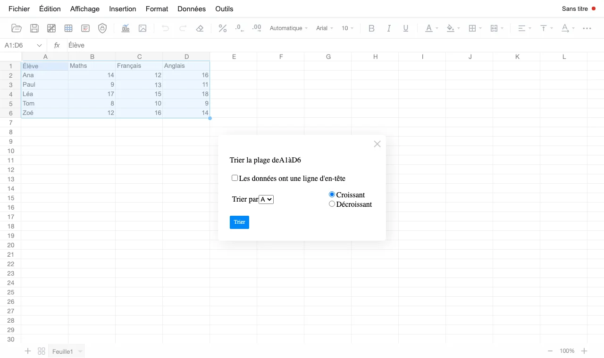
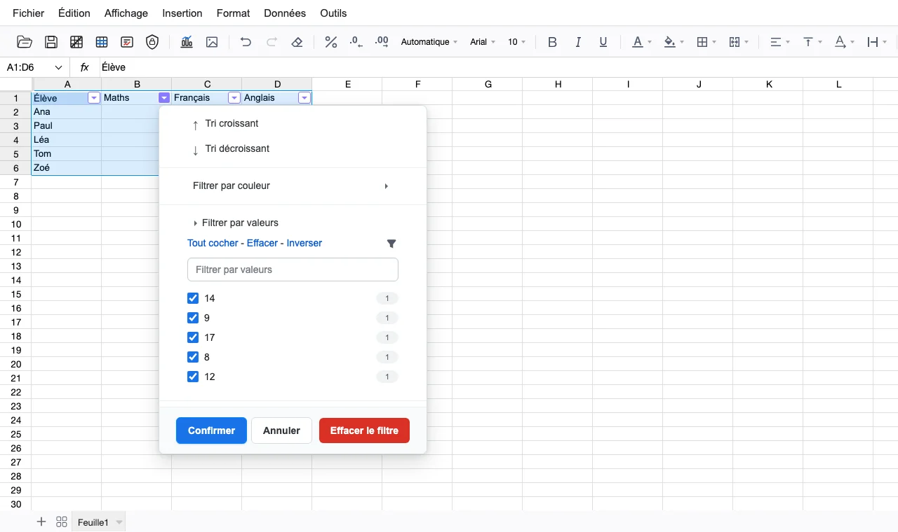
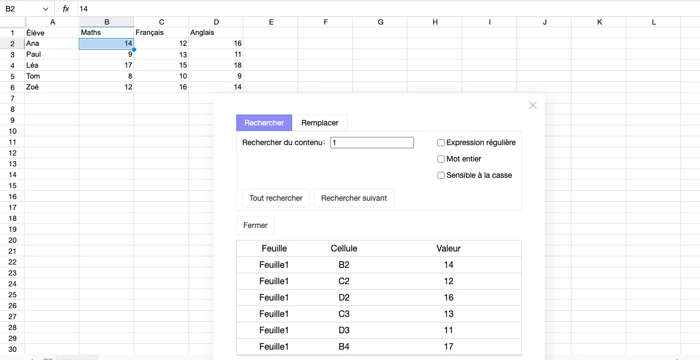

Trier, filtrer, rechercher
Trier
| Commande | Effet |
|---|---|
| Données › Trier et filtrer › Croissant, Décroissant | trie la sélection d’après sa première colonne ; aussi par et par le clic droit |
| clic droit › Trier | choisit la colonne de tri, l’ordre, et si la première ligne est un en-tête |

Sélectionner tout le tableau, pas une seule colonne : les lignes doivent rester entières. Une plage qui contient des cellules fusionnées ne se trie pas.
Filtrer
- Sélectionner le tableau, en-tête compris.
- Données › Trier et filtrer › Créer un filtre, ou , ou clic droit › Filtrer.
- Cliquer la flèche d’une colonne.

| Dans le menu d’une colonne | Effet |
|---|---|
| Tri croissant, Tri décroissant | trie les lignes du tableau |
| Filtrer par couleur | d’après la couleur du fond ou du texte |
| Filtrer par valeurs | cocher les valeurs à garder ; Tout cocher, Effacer, Inverser ; le champ cherche une valeur |
| Confirmer | applique |
| Effacer le filtre | retire le filtre du tableau |
Les lignes écartées sont masquées, pas supprimées. Les filtres de plusieurs colonnes se cumulent. Données › Trier et filtrer › Effacer le filtre retire le filtre.
Rechercher, remplacer
Ctrl F ouvre Rechercher, Ctrl H Remplacer.

| Option | Effet |
|---|---|
| Expression régulière | le texte cherché est une expression régulière : ^A trouve ce qui commence par A |
| Mot entier | la cellule entière est égale au texte |
| Sensible à la casse | distingue majuscules et minuscules |
| Tout rechercher | liste les cellules trouvées ; cliquer une ligne y va |
| Rechercher suivant | va à la suivante |
| Remplacer, Tout remplacer | une cellule, toutes |
La recherche porte sur la feuille affichée.